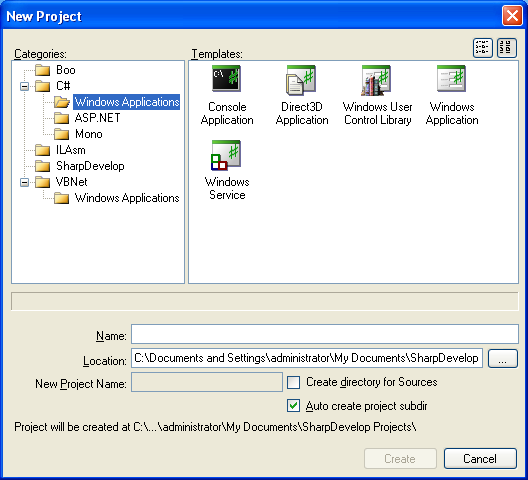
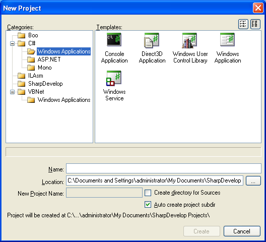

This opens the New Project dialog box.

The project categories are on the left hand side, whilst the project templates are displayed on the right hand side.
With SharpDevelop you can create and develop many different types of project.
| Project Template | Description |
|---|---|
| ASP.NET Web Page Project | Creates a project that contains one ASP.NET web page. |
| Class Library | Creates a class library (.dll) project. |
| Console Application | Creates a command line application. |
| Direct 3D Application | Creates a Direct 3D application. |
| Empty Solution | Creates a solution that contains no projects. |
| Glade# Application | Creates an application that uses Glade# on Mono. The created project contains a Gtk# window which will be the main application window. A Glade XML file is defines the controls that are added to the window and this can be opened and designed in the Glade designer. |
| Gtk# Application | Creates an application that uses Gtk# on Mono. The created project contains a Gtk# window which will be the main application window. |
| SharpDevelop AddIn | Creates a simple addin library that extends SharpDevelop by adding a new window (or pad) to the development environment. |
| SharpDevelop Tools Menu Entry | Creates a simple addin library that extends SharpDevelop by adding a Tools menu item that when clicked takes the currently selected text in the text editor and reverses it. |
| Windows Application | Creates a Windows GUI application. The created project contains a Windows Form which you can add Windows User Controls to in order to create your main application window. |
| Windows Service | Creates an application that will run as a Windows service. |
| Windows User Control Library | Creates a library (.dll) that will contain Windows User Controls. |
This opens the New Project dialog box.

The project categories are on the left hand side, whilst the project templates are displayed on the right hand side.